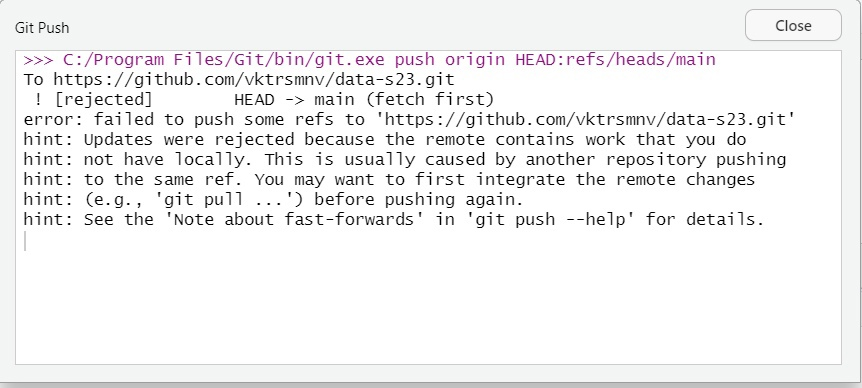
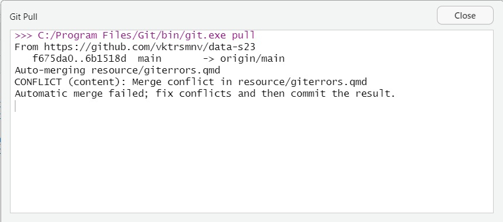
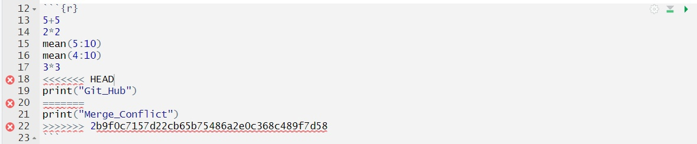
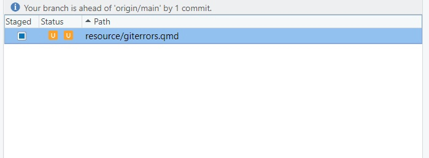
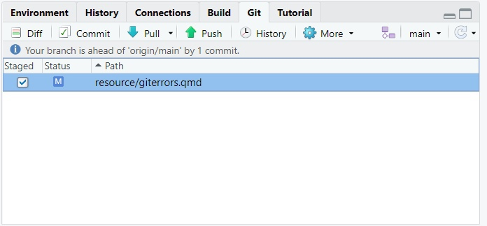
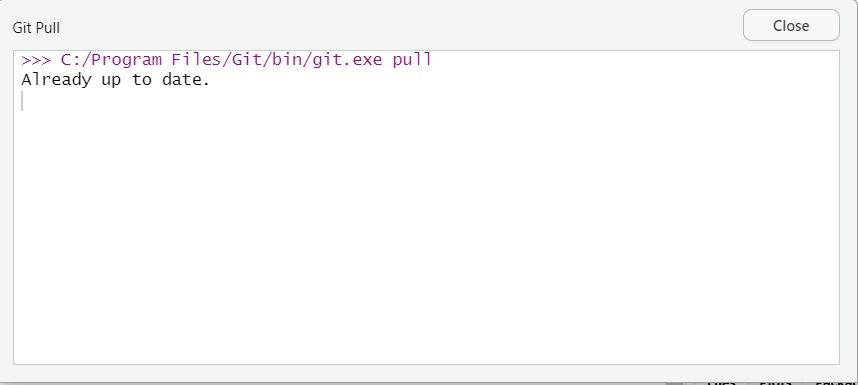

GitHub Errors
This guide is about potential problems you may encounter while working together on the project using GitHub.
Why can GitHub cause problems?
As you already know, GitHub is a version control system which is particularly useful for the collaborative work on your project. The unique functionality of GitHub is provided by the complexity of the data storage mechanism(for more details, see this page). As soon as it is different from the other collaborative work instruments which students usually use working on different project, they sometimes perform actions which cause GitHub errors.The most common problem is merging conflict. Imagine that you and your friend work together on the home task writing R script. You meet in the library and work on the assignment together from one computer. After that, you decide to consider the assignment yourself at home and so does your friend. Before going to the party, you want to commit your work and push it to GitHub. However, you get the following error message:

From the error message you learn that the cause of the problem is that you don’t have some part of the code locally but it is already there in the repository. It must be your friend who has already changed the script and pushed it to the repository, and you didn’t know that and transformed the old file version. Now what you want is to ‘git pull’ his changes to be able to commit your part.

However, in some cases, it is impossible to integrate your parts and solve the merging conflict automatically, so you have to do it manually.

With the conflict markers(<<<<<<<, =======, >>>>>>>) being present you finally understand what’s going on: your part which is between <<<<<<< HEAD and ======= is in conflict with the code of your friend which is between ======= and >>>>>>>. Now you can decide whether to delete your or your friends’ part or go with them both being in the final version of the code. You manually delete conflict markers and save the file. After that, you find your file in the upper right corner of the RStudio page.

When you click the box the square becomes a tick and you can commit and push the new version of the script without any problems.

For more details on how to solve the merge conflict see this material. In the next part, we talk about the simple steps of your RStudio working routine which would help to avoid this problem in the first place.
Avoid GitHub errors: simple rules
The first and very simple rule is to always work on your assignment in the project file. Some students open .qmd files with the code separately and then see that there is no connection with the GitHub repository and they can not commit their changes. As you already know, having an R Project is also useful for keeping all the necessary files in one place to ensure reproducibility.
Before opening the R Project file on your computer, spend some time going to the GitHub repository, seeing what is the last commit and reading the corresponding comments. After that open the project file you are going to work with and before making any corrections press the Pull button. It is a blue arrow pointing down. If you have an old version of the file it will be updated. If you locally have the most up-to-date version, you will get the following message:

Then you can work on your part of the project. Before committing and pushing your code to the repository, you can again click on Pull, and only after that press the “Push” button. This would allow you to avoid merging conflicts.
GitHub has an in-built functionality to host collaborative projects and ensure the smooth co-existence of multiple active contributors who work on the same part of the project separately but at the same time. It also has multiple tools to solve merge conflicts. However, it also has multiple communication tools which could make technical problem-solving unnecessary. Write senseless comments to your commits, discuss the project with your colleagues before starting it, and inform them about your progress.